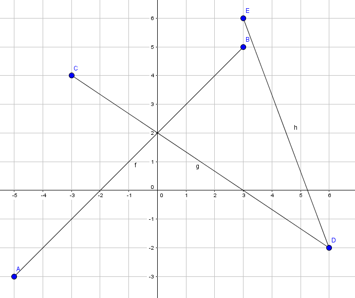

import time
tic = time.perf_counter()
# do something
tac = time.perf_counter()
print("Laufzeit in Sekunden: ",round(tac-tic,4))
with open('input.txt') as f:
aList = f.read().splitlines()
Eine einfache Art, alle Strings einer Liste in eine Datei zu schreiben, open/close
ist nicht notwendig
with open('output.txt','w') as f:
f.writelines([x+'\n' for x in aList] )
f = open('daten1.txt')
f = open('mydata\daten2.txt','r') # r zum lesen ist default
f = open('C:\\Users\\...\\mydata\\daten2.txt')
f = open('daten2.txt','w') # w zum schreiben
Danach kann man lesen oder schreiben, am Ende muss die Datei wieder geschlossen werden.
daten = f.read() # liest den gesamten Inhalt in den String daten zeile = f.readline() # liest eine Zeile in den String zeile daten = f.readlines() # liest den gesamten Inhalte in eine Liste von Zeilen-Strings for s in f: # iteriert durch jede Zeile von f f.write(s) # schreibt einen String s in die Datei print(s, file = f) # schreibt einen String s in die Datei f.close() # schließt die Datei
Beispiele
Eingabe: daten1.txt
zeile1 zeile2 zeile3
# eine Datei zeilenweise lesen und ausgeben
f = open('daten1.txt')
for s in f:
print(s.strip())
f.close()
#Die Zeilen werden mit Zeilenvorschub in die Liste daten eingelesen.
f = open('daten1.txt')
daten = f.readlines() # daten ist eine Liste
f.close()
print(daten)
Ausgabe:
['zeile1\n', 'zeile2\n', 'zeile3\n']
# Alle Zeilen werden als langer String eingelesen
f = open('daten1.txt')
daten = f.read() # daten ist ein String
f.close()
print(daten)
print(len(daten))
Ausgabe:
zeile1 zeile2 zeile3 21
Bei den BWInf-Aufgaben enthalten einzulesende Dateien häufig Informationen über Anzahl und Format der Folgezeilen. Im folgenden Beispiel sollen die ersten beiden Zahlen als Parameter x und y eingelesen werden und die dritte Zahl gibt an, wieviele Zeilen noch folgen. Diese Zeilen werden in einer Liste gesammelt. Anschließend werden die Daten ausgegeben.
2 5 4 zeile1 zeile2 zeile3 zeile4
f = open('daten3.txt')
x, y, anzahl = [int(s) for s in f.readline().split()]
daten = []
for i in range(anzahl):
daten.append(f.readline().strip())
f.close()
print('x =',x)
print('y =',y)
for s in daten:
print(s)
Eine Matrix einlesen und verdoppelt wieder ausgeben. Die erste Zeile gibt an,
wieviele Zeilen und Spalten die Matrix hat.
Eingabe:
3 4 12 2 3 4 5 1 0 -5 11 4 10 -9
f = open('matrix.txt')
rows, cols = [int(s) for s in f.readline().split()]
a = []
for i in range(rows):
a.append([int(j) for j in f.readline().split()])
f.close()
for i in range(rows):
for j in range(cols):
print('{:4}'.format(2*a[i][j]),end='')
print()
Ausgabe:
24 4 6 8 10 2 0 -10 22 8 20 -18 >>>Daten schreiben
f = open('daten4.txt','w')
daten = []
daten.append('zeile1')
daten.append('zeile2')
daten.append('zeile3')
for s in daten:
print(s,file = f)
# oder:
# f.write(s+'\n')
f.close()
python -m pip install sympy
Mit sympy kann man geometrische Objekte wie Punkt, Gerade, Strecke modellieren und einige Dinge damit berechnen. Im Folgenden werden die Schnittpunkte der abgebildeten Strecken berechnet.
>>> from sympy import Point,Segment >>> a = Point(-5,-3) # a vom Typ Point2D >>> b = Point(3,5) >>> c = Point(-3,4) >>> d = Point(6,-2) >>> e = Point(3,6) >>> ab = Segment(a,b) # Strecke AB >>> cd = Segment(c,d) >>> de = Segment(d,e) >>> ab.intersection(cd) # Liste mit Schnittpunkten [Point2D(0, 2)] >>> cd.intersection(de) [Point2D(6, -2)] >>> ab.intersection(de) [] # kein Schnittpunkt